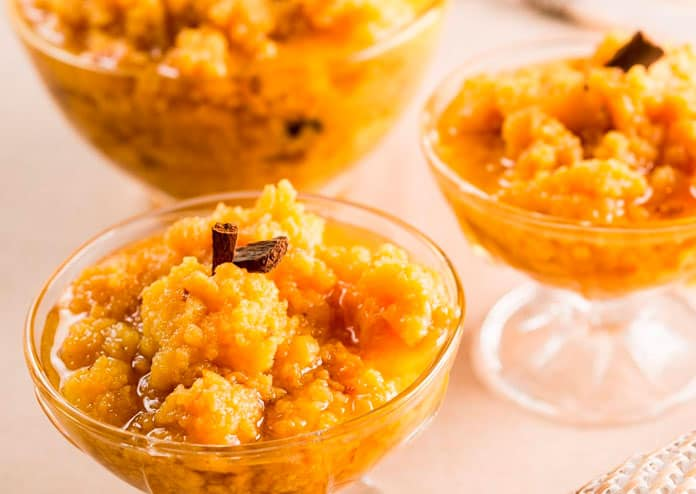

Ambrosia

Descrição
Considerada um "manjar dos Deuses", a ambrosia é uma sobremesa bem simples e econômica preparada com ovo, leite e açúcar. Apesar disso é deliciosa e com certeza que, depois de provar, todos quererão repetir a dose! Confira aqui no TudoReceitas a verdadeira receita de ambrosia tradicional. Em 30 minutos estará pronta! Confira abaixo todos os detalhes.
Ingredientes
- 1 litro de leite
- 500 gramas de açúcar
- 5 ovos batidos
- 1 limão (raspa)
- 1 pau de canela
- canela em pó (opcional)
Modo de Preparo
- Comece por colocar numa panela o leite e o pau de canela. Leve ao fogo médio mexendo de vez em quando, para esquentar e aromatizar o leite. Isso é importante para que ambrosia tradicional fique bem saborosa!
- Quando o leite ferver acrescente o açúcar e fique mexendo para dissolver bem os grãos. Em seguida adicione os ovos batidos e o limão. Mexa (de preferência com um fouet) para cozinhar o ovo e assim se formarem os grumos característicos da receita de ambrosia tradicional.
- Cozinhe até os ovos empelotarem e a calda reduzir.
- Sirva a ambrosia tradicional em uma vasilha, polvilhada com canela em pó, ou guarde em frascos esterilizados.
- Bom apetite!
Dica: Se você quiser pode também juntar algumas gotas de suco de limão.
Dica: Você pode deixar a ambrosia com ou sem calda, como mais gostar.